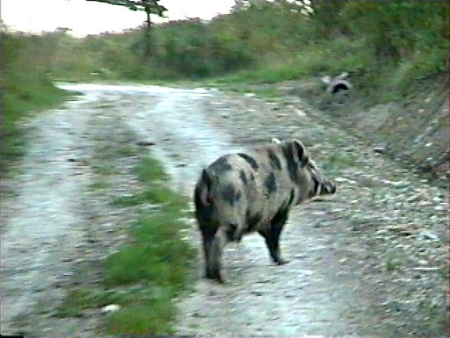
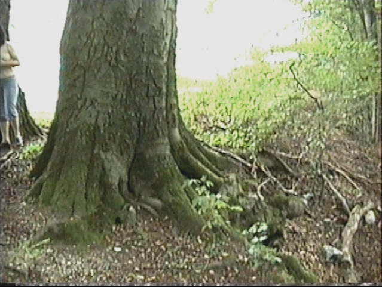

Aktualności 2007
Wydarzenia i informacje
Lokalna gazeta The Redmond Spokeman doniosła o śmierci 85-letniej Marii Kazala (ur. 28.08.1922 r.), z domu Pasławska, zamieszkałej w Redmond (USA, stan Oregon), a urodzonej w Kopysnie. Dokładniejsze informacje o byłej mieszkance Kopysna i jej losach znaleźć można w zakładce Historie Mieszkańców na naszej stronie.
Wschód słońca w Kopysnie wygląda wspaniale, a jak się ujrzy jeszcze zwierzęta... :).



Przyjrzeliśmy się dokładniej drzewu (Buk pospolity) rosnącemu obok kapliczki św. Jana. Drzewo to posiada 434 cm obwodu, ma wysokość ok.30 m, a średnica korony wynosi ok. 20 m. Na podstawie liczenia słoi rocznych przy użyciu świdra Presslera i poprzez analogię ustaliliśmy, iż wiek pierśnicowy drzewa wynosi 152 lata. Drzewo będzie nosić nazwę "Michał" :). Mamy nadzieję, że wkrótce drzewo to zostanie uznane jako pomnik przyrody.



Wkrótce na naszej stronie zamieścimy "wirtualny" cmentarz z Kopysna. Będzie można obejrzeć wszystkie zachowane na nim groby i nagrobki. Mamy nadzieję, że w jakimś zakresie przybliży to pamięć o naszych bliskich, którzy zmarli i zostali pochowani w Kopysnie. Prosimy jednocześnie o nadsyłanie starych zdjęć cmentarza, relacji z pogrzebów, wizyt, fotografii nagrobków itp. Zob. Cmentarz.